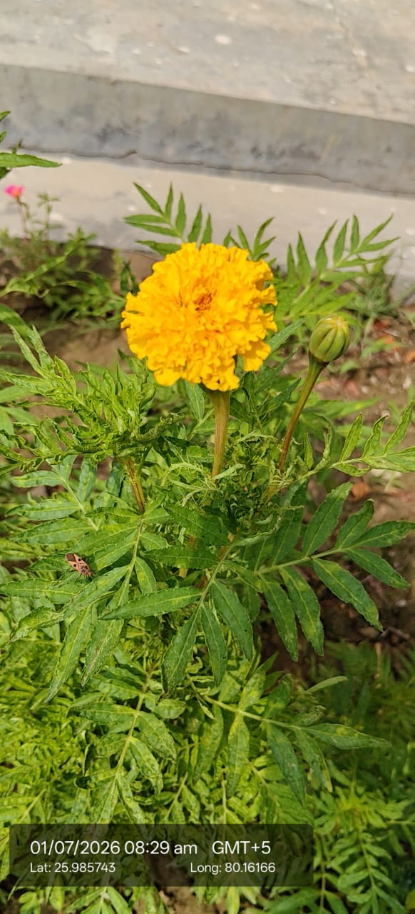

Also known as: Marigold / Genda / African Marigold

Scientific name
Tagetes erecta
Type
Annual herb
Category
Herbs
Habitat & Growing Conditions
Native to Mexico and Central America. Widely cultivated across India as a garden and commercial flower crop, very common in UP including the Kanpur region in your coordinates
Thrives in warm tropical and subtropical climate. Grows best at 18-35°C. Sensitive to frost but handles UP summer heat well if watered
Prefers full sun for maximum flowering. Gets leggy in shade
Grows in well-drained sandy loam to clay loam soil. Tolerates moderate drought but flowers best with regular watering
Planted in home gardens, parks, temple grounds, and on a large scale for commercial floriculture. Also grows as an escape along roadsides and field edges
Flowers profusely from monsoon through winter, Oct-Mar in UP. Peak blooming during festivals like Dussehra and Diwali
Economic Importance
Floriculture: Major commercial flower crop in India. Used for garlands, floral decorations, weddings, festivals, and religious offerings. UP is one of the largest producers
Religious & cultural: Essential flower in Hindu rituals. Offered to gods, used in puja, marriage mandaps, and to welcome guests. Symbol of auspiciousness
Dye & pigment: Flowers yield yellow-orange dye. Petal extract is a rich source of lutein and xanthophylls used as natural food coloring and in poultry feed to deepen egg yolk color
Medicinal Importance
In folk medicine, flower and leaf paste used for wounds, skin problems, and eye diseases. Has antifungal and antibacterial properties. Note: Consult a healthcare professional before any medicinal use
Agricultural: Planted as a trap crop and companion plant. Roots exude thiophenes that repel nematodes in soil. Used in crop rotation to reduce root-knot nematode in vegetables
Essential oil: Flowers yield "tagetes oil" used in perfumes and aromatherapy, though strong-smelling